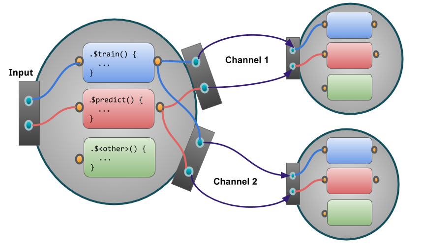

library("mlr3extralearners")
create_learner(
path = "path/to/a/folder",
classname = "Rpart",
type = "classif",
key = "rpart",
algorithm = "Decision Tree",
package = "rpart",
caller = "rpart",
feature_types = c("logical", "integer", "numeric", "factor", "ordered"),
predict_types = c("response", "prob"),
properties = c("importance", "missings", "multiclass", "twoclass", "weights"),
gh_name = "RaphaelS1",
label = "Regression and Partition Tree",
data_formats = "data.table"
)11 Extending
Abstract
TODO (150-200 WORDS)
This chapter gives instructions on how to extend mlr3 and its extension packages with custom objects.
The approach is always the same:
- determine the base class you want to inherit from,
- extend the class with your custom functionality,
- test your implementation
- (optionally) add new object to the respective
Dictionary.
The chapter Create a new learner illustrates the steps needed to create a custom learner in mlr3.
This section of the book might be complex for some readers.
11.1 Adding new Learners
Although many learners are already included in the mlr3 ecosystem, there might be a situation in which your algorithm of choice is not implemented. Here, we show how to create a custom mlr3learner step-by-step using mlr3extralearners::create_learner. If you intend to add a learner to mlr3extralearners, it is strongly recommended to first open a learner request issue to inform the mlr3 team about your idea. This allows to discuss the implementation details and potential peculiarities of the learner before putting actual work in.
This section gives insights on how a mlr3learner is constructed and how to troubleshoot issues. See the Learner FAQ subsection for help.
Summary of steps for adding a new learner
- Check that the learner does not already exist here.
-
Install
mlr3extralearnersand if you want to create a PR, also fork and clone it. -
Run
mlr3extralearners::create_learner(). - Add the learner’s
ParamSet. - Manually add
.trainand.predictprivate methods to the learner. - Implement supported optional extractors and hotstarting if applicable.
- Fill out the missing parts in the learner’s description. To add references you first need to create an entry in bibentries.R
- Check that unit tests and parameter tests pass (these are automatically created).
- Run cleaning functions.
- Open a pull request with the “new learner” template.
Warning
Do not copy/paste the code shown in this section. Use create_learner() to start.
11.1.1 Setting-up mlr3extralearners
In order to use mlr3extralearners::create_learner you must have mlr3extralearners installed. Note that mlr3extralearners is not on CRAN and has to be installed from GitHub. To ensure that you have the latest version, run remotes::install_github("mlr-org/mlr3extralearners") before proceeding.
If you want to create a pull request to mlr3extralearners you also need to
- Fork the repository
- Clone a local copy of your forked repository.
11.1.2 Calling create_learner
The learner classif.rpart will be used as a running example throughout this section.
The full documentation for the function arguments is in mlr3extralearners::create_learner, in this example we are doing the following:
-
path = "path/to/a/folder"- This determines where the templates are being generated. If the path is the root of an R package, the learner is created in the ./R directory and the test files in ./tests/testthat. Otherwise, all files are being created in the folder pointed to by path. Already existing files will not be modified. -
classname = "Rpart"- Set the R6 class name to LearnerClassifRpart (classif is below) -
algorithm = "Decision Tree"- Create the title as “Classification Decision Tree Learner”, where “Classification” is determined automatically fromtypeand “Learner” is added for all learners. -
type = "classif"- Setting the learner as a classification learner, automatically filling the title, class name, id ("classif.rpart") and task type. -
key = "rpart"- Used withtypeto create the unique ID of the learner,"classif.rpart". -
package = "rpart"- Setting the package from which the learner is implemented, this fills in things like the training function (along withcaller) and themanfield. -
caller = "rpart"- This tells the.trainfunction, and the description which function is called to run the algorithm, withpackagethis automatically fillsrpart::rpart. -
feature_types = c("logical", "integer", "numeric", "factor", "ordered")- Sets the type of features that can be handled by the learner. See meta information. -
predict_types = c("response", "prob"),- Sets the available prediction types as response (pointwise prediction) and prob (probabilities). See meta information. -
properties = c("importance", "missings", "multiclass", "twoclass", "weights")- Sets the properties the learner supports. By including"importance"a public method calledimportancewill be created that must be manually filled. See meta information and optional extractors. -
gh_name = "RaphaelS1"- Fills the ‘@author’ tag with my GitHub handle, this is required as it identifies the maintainer of the learner.
The sections below show an exemplary execution of mlr3extralearners::create_learner.
11.1.3 learner_package_type_key.R
The first generated file which must be updated after running create_learner() is the one following the structure learner_<package>_<type>_<key>.R; in this example learner_rpart_classif_rpart.R.
For our example, the resulting script looks like this:
#' @title Classification Decision Tree Learner
#' @author RaphaelS1
#' @name mlr_learners_classif.rpart
#'
#' @description
#' FIXME: BRIEF DESCRIPTION OF THE LEARNER.
#' Calls [rpart::rpart()] from FIXME: (CRAN VS NO CRAN): \CRANpkg{rpart} | 'rpart'.
#'
#' @section Custom mlr3 parameters:
#' FIXME: DEVIATIONS FROM UPSTREAM PARAMETERS. DELETE IF NOT APPLICABLE.
#'
#' @section Custom mlr3 defaults:
#' FIXME: DEVIATIONS FROM UPSTREAM DEFAULTS. DELETE IF NOT APPLICABLE.
#'
#' @section Installation:
#' FIXME: CUSTOM INSTALLATION INSTRUCTIONS. DELETE IF NOT APPLICABLE.
#'
#' @templateVar id classif.rpart
#' @template learner
#'
#' @references
#' FIXME: ADD REFERENCES
#'
#' @template seealso_learner
#' @template example
#' @export
LearnerClassifRpart = R6Class("LearnerClassifRpart",
inherit = LearnerClassif,
public = list(
#' @description
#' Creates a new instance of this [R6][R6::R6Class] class.
initialize = function() {
# FIXME: MANUALLY ADD PARAMETERS BELOW AND THEN DELETE THIS LINE
param_set = ps()
# FIXME: MANUALLY UPDATE PARAM VALUES BELOW IF APPLICABLE THEN DELETE THIS LINE.
param_set$values = list()
super$initialize(
id = "classif.rpart",
packages = "rpart",
feature_types = c("logical", "integer", "numeric", "factor", "ordered"),
predict_types = c("response", "prob"),
param_set = param_set,
properties = c("importance", "missings", "multiclass", "twoclass", "weights"),
man = "mlr3extralearners::mlr_learners_classif.rpart",
label = "Regression and Partition Tree"
)
},
# FIXME: ADD IMPORTANCE METHOD IF APPLICABLE AND DELETE OTHERWISE
# SEE mlr3extralearners::LearnerRegrRandomForest FOR AN EXAMPLE
#' @description
#' The importance scores are extracted from the slot FIXME:.
#' @return Named `numeric()`.
importance = function() {
pars = self$param_set$get_values(tags = "importance")
# FIXME: Implement importance
}
),
private = list(
.train = function(task) {
# get parameters for training
pars = self$param_set$get_values(tags = "train")
# FIXME: IF LEARNER DOES NOT HAVE 'weights' PROPERTY THEN DELETE THESE LINES.
if ("weights" %in% task$properties) {
# Add weights to learner
}
# FIXME: CREATE OBJECTS FOR THE TRAIN CALL
# AT LEAST "data" AND "formula" ARE REQUIRED
formula = task$formula()
data = task$data()
# FIXME: HERE IS SPACE FOR SOME CUSTOM ADJUSTMENTS BEFORE PROCEEDING TO THE
# TRAIN CALL. CHECK OTHER LEARNERS FOR WHAT CAN BE DONE HERE
# USE THE mlr3misc::invoke FUNCTION (IT'S SIMILAR TO do.call())
invoke(
rpart::rpart,
formula = formula,
data = data,
.args = pars
)
},
.predict = function(task) {
# get parameters with tag "predict"
pars = self$param_set$get_values(tags = "predict")
# get newdata and ensure same ordering in train and predict
newdata = ordered_features(task, self)
# Calculate predictions for the selected predict type.
type = self$predict_type
pred = invoke(predict, self$model, newdata = newdata, type = type, .args = pars)
# FIXME: ADD PREDICTIONS TO LIST BELOW
list()
}
)
)
.extralrns_dict$add("classif.rpart", LearnerClassifRpart)Now we have to do the following (the description will be addressed later):
- Add the learner’s parameters to the ParamSet.
- Optionally change default values for the parameters.
- Fill in the private
.trainmethod, which takes a (filtered)Taskand returns a model. - Fill in the private
.predictmethod, which operates on the model inself$model(stored during$train()) and a (differently subsetted)Taskto return a named list of predictions. - As we included “importance” in
properties, we have to add the public methodimportance()which returns a named numeric vectors with the decreasingly sorted importance scores (values) for the different features (names).
11.1.4 Meta-information
In the constructor (initialize()) the constructor of the super class (e.g. LearnerClassif) is called with meta information about the learner which should be constructed. This includes:
-
id: The ID of the new learner. Usually consists of<type>.<key>, for example:"classif.rpart". -
packages: The upstream package name(s) of the implemented learner. -
param_set: A set of hyperparameters and their descriptions provided as aparadox::ParamSet. For each hyperparameter the appropriate class needs to be chosen. When using theparadox::psshortcut, a short constructor of the formp_***can be used:-
paradox::ParamLgl/paradox::p_lglfor scalar logical hyperparameters. -
paradox::ParamInt/paradox::p_intfor scalar integer hyperparameters. -
paradox::ParamDbl/paradox::p_dblfor scalar numeric hyperparameters. -
paradox::ParamFct/paradox::p_fctfor scalar factor hyperparameters (this includes characters). -
paradox::ParamUty/paradox::p_utyfor everything else (e.g. vector paramters or list parameters).
-
-
predict_types: Set of predict types the learner supports. These differ depending on the type of the learner. Seemlr_reflections$learner_predict_typesfor the full list of predict types supported bymlr3.-
LearnerClassif-
response: Only predicts a class label for each observation. -
prob: Also predicts the posterior probability for each class for each observation.
-
-
LearnerRegr-
response: Only predicts a numeric response for each observation. -
se: Also predicts the standard error for each value of response.
-
-
LearnerSurv-
lp- Linear predictor calculated as the fitted coefficients multiplied by the test data. -
distr- Predicted survival distribution, either discrete or continuous. Implemented indistr6. -
crank- Continuous risk ranking. -
response- Predicted survival time.
-
-
LearnerDens-
pdf- Predicts the probability density function. -
cdf- Predicts the cumulative distribution function. -
distr- Predicts a distribution as implemented indistr6.
-
-
LearnerClust-
partition- Assigns the observation to a partition. -
prob- Returns a probability for each partition.
-
-
-
feature_types: Set of feature types the learner is able to handle. Seemlr_reflections$task_feature_typesfor feature types supported bymlr3. -
properties: Set of properties of the learner. Seemlr_reflections$learner_propertiesfor the full list of learner properties supported bymlr3. The list of properties includes:-
"twoclass": The learner works on binary classification problems. -
"multiclass": The learner works on multi-class classification problems. -
"missings": The learner can natively handle missing values. -
"weights": The learner can work on tasks which have observation weights / case weights. -
"importance": The learner supports extracting importance values for features. -
"selected_features": The learner supports extracting the features which were selected by the model. -
"oob_error": The learner supports extracting the out of bag error. -
"loglik": The learner supports extracting the log-likelihood of the learner. -
"hotstart_forward": The learner allows to continue training the model e.g. by adding more trees to a random forest. -
"hotstart_backward": The learner allows to “undo” some of the training, e.g. by removing some trees from a model.
-
-
man: The roxygen identifier of the learner. This is used within the$help()method of the super class to open the help page of the learner. -
label: The label of the learner. This should briefly describe the learner (similar to the description’s title) and is for example used for printing.
11.1.5 ParamSet
The ParamSet is the set of hyperparameters used in model training and predicting, this is given as a paradox::ParamSet. The set consists of a list of hyperparameters, where each has a specific class for the hyperparameter type (see above). In addition, each parameter has one or more tags, that determine in which method they are used.
Beyond that there are other tags that serve specific purposes:
- The tag
"threads"should be used (if applicable) to tag the parameter that determines the number of threads used for the learner’s internal parallelization. This parameter can be set usingset_threads. - The tag
"required"should be used to tag parameters that must be provided for the algorithm to be executable. - In case optional extractors are available, the can (although this is rarely the case) also have parameters and can be tagged accordingly.
- If hotstarting is available, the fidelity parameter should be tagged with
"hotstart".
For classif.rpart the param_set can be defined as follows
param_set = ps(
minsplit = p_int(lower = 1L, default = 20L, tags = "train"),
minbucket = p_int(lower = 1L, tags = "train"),
cp = p_dbl(lower = 0, upper = 1, default = 0.01, tags = "train"),
maxcompete = p_int(lower = 0L, default = 4L, tags = "train"),
maxsurrogate = p_int(lower = 0L, default = 5L, tags = "train"),
maxdepth = p_int(lower = 1L, upper = 30L, default = 30L, tags = "train"),
usesurrogate = p_int(lower = 0L, upper = 2L, default = 2L, tags = "train"),
surrogatestyle = p_int(lower = 0L, upper = 1L, default = 0L, tags = "train"),
xval = p_int(lower = 0L, default = 0L, tags = "train"),
keep_model = p_lgl(default = FALSE, tags = "train")
)
param_set$values = list(xval = 0L)Within mlr3 packages we suggest to stick to the shorthand notation above for consistency, however the param_set can be written with the underlying R6 classes as shown here
param_set = ParamSet$new(list(
ParamInt$new(id = "minsplit", default = 20L, lower = 1L, tags = "train"),
ParamInt$new(id = "minbucket", lower = 1L, tags = "train"),
ParamDbl$new(id = "cp", default = 0.01, lower = 0, upper = 1, tags = "train"),
ParamInt$new(id = "maxcompete", default = 4L, lower = 0L, tags = "train"),
ParamInt$new(id = "maxsurrogate", default = 5L, lower = 0L, tags = "train"),
ParamInt$new(id = "maxdepth", default = 30L, lower = 1L, upper = 30L, tags = "train"),
ParamInt$new(id = "usesurrogate", default = 2L, lower = 0L, upper = 2L, tags = "train"),
ParamInt$new(id = "surrogatestyle", default = 0L, lower = 0L, upper = 1L, tags = "train"),
ParamInt$new(id = "xval", default = 0L, lower = 0L, tags = "train"),
ParamLgl$new(id = "keep_model", default = FALSE, tags = "train")
))
param_set$values = list(xval = 0L)You should read though the learner documentation to find the full list of available parameters. Just looking at some of these in this example:
-
"cp"is numeric, has a feasible range of[0,1]and defaults to0.01. The parameter is used during"train". -
"xval"is integer has a lower bound of0, a default of0and the parameter is used during"train". -
"keep_model"is logical with a default ofFALSEand is used during"train".
In some rare cases you may want to change the default parameter values. You can do this by changing the param_set$values. You can see we have done this for "classif.rpart" where the default for xval is changed to 0. Note that the default in the ParamSet is recorded as our changed default (0), and not the original (10). It is strongly recommended to only change the defaults if absolutely required, when this is the case add the following to the learner documentation:
#' @section Custom mlr3 defaults:
#' - `<parameter>`:
#' - Actual default: <value>
#' - Adjusted default: <value>
#' - Reason for change: <text>11.1.6 Train function
The train function takes a Task as input and must return a model. Let’s say we want to translate the following call of rpart::rpart() into code that can be used inside the .train() method.
First, we write something down that works completely without mlr3:
We need to pass the formula notation Species ~ ., the data and the hyperparameters. To get the hyperparameters, we call self$param_set$get_values(tag = "train") and thereby query all parameters that are using during "train". Then, the dataset is extracted from the Task. Because the learner has the property "weights", we insert the weights of the task if there are any.
Last, we call the upstream function rpart::rpart() with the data and pass all hyperparameters via argument .args using the mlr3misc::invoke() function. The latter is simply an optimized version of do.call() that we use within the mlr3 ecosystem.
11.1.7 Predict function
The internal predict method .predict() also operates on a Task as well as on the fitted model that has been created by the train() call previously and has been stored in self$model.
The return value is a Prediction object. We proceed analogously to what we did in the previous section. We start with a version without any mlr3 objects and continue to replace objects until we have reached the desired interface:
The "rpart::predict.rpart()" function predicts class labels if argument type is set to to "class", and class probabilities if set to "prob".
Next, we transition from data to a Task again and construct a list with the return type requested by the user, this is stored in the $predict_type slot of a learner class. Note that the Task is automatically passed to the prediction object, so all you need to do is return the predictions! Make sure the list names are identical to the task predict types.
The final .predict() method is below, we could omit the pars line as there are no parameters with the "predict" tag but we keep it here to be consistent:
.predict = function(task) {
pars = self$param_set$get_values(tags = "predict")
# get newdata and ensure same ordering in train and predict
newdata = ordered_features(task, self)
if (self$predict_type == "response") {
response = invoke(
predict,
self$model,
newdata = newdata,
type = "class",
.args = pars
)
return(list(response = response))
} else {
prob = invoke(
predict,
self$model,
newdata = newdata,
type = "prob",
.args = pars
)
return(list(prob = prob))
}
}
Warning
You cannot rely on the column order of the data returned by task$data() as the order of columns may be different from the order of the columns during $.train. The newdata line ensures the ordering is the same by calling the same order as in train!
11.1.8 Optional Extractors
Specific learner implementations are free to implement additional getters to ease the access of certain parts of the model in the inherited subclasses. The blueprint for these methods is only included in the generated learner template, if the property is set when calling create_learner(). The comments in the templates will include references to other learners that have this property and can be used as guiding examples. To determine whether these methods are applicable, one has to determine whether the learner supports this method in principle and whether it is implemented in the upstream package.
For the following operations, extractors are standardized:
-
importance(...)- Returns the feature importance score as numeric vector. The higher the score, the more important the variable. The returned vector is named with feature names and sorted in decreasing order. Note that the model might omit features it has not used at all. The learner must be tagged with property"importance". -
selected_features(...)- Returns a subset of selected features as character(). The learner must be tagged with property"selected_features". -
oob_error(...)- Returns the out-of-bag error of the model asnumeric(1). The learner must be tagged with property"oob_error". -
loglik(...)- Extracts the log-likelihood (c.f.stats::logLik()). The learner must be tagged with property"loglik".
In this case, we only have to implement the importance() method.
11.1.9 Hotstarting
Some learners support resuming or continuing from an already fitted model. We assume that hotstarting is only possible if a single hyperparameter (also called the fidelity parameter, usually controlling the complexity or expensiveness) is altered and all other hyperparameters are identical. The fidelity parameters should be tagged with "hotstart". Examples are:
- Random Forest: Starting from a model with n trees, a random forest with n + k trees can be obtained by adding k trees (
"hotstart_forward") and a random forest with n - k trees can be obtained by removing k trees ("hotstart_backward"). - Gradient Boosting: When having fitted a model with n iterations, we only need k iterations to obtain a model with n + k iterations. (
"hotstart_forward").
For more information see HotstartStack.
11.1.10 Control objects/functions of learners
Some learners rely on a “control” object/function such as glmnet::glmnet.control(). Accounting for such depends on how the underlying package works:
- If the package forwards the control parameters via
...and makes it possible to just pass control parameters as additional parameters directly to the train call, there is no need to distinguish both"train"and"control"parameters. - If the control parameters need to be passed via a separate argument, one can e.g. use
formalArgs(glmnet::glmnet.control)to get the names of the control parameters and then extract them from theparslike shown below.
11.1.11 Adding the description
Once the learner is implemented - and is not only intended for personal use - it’s description should be filled out. Most steps should be clear from the instructions given in the template. For the section ‘@references’, the entry first has to be added to the file bibentries.R, essentially by converting the bibtex file to a R bibentry function call.
11.1.12 Testing the learner
Once your learner is created, you are ready to start testing if it works, there are three types of tests: manual, unit and parameter.
11.1.12.1 Train and Predict
For a bare-bone check you can just try to run a simple train() call locally.
If it runs without erroring, that’s a very good start!
11.1.12.2 Autotest
To ensure that your learner is able to handle all kinds of different properties and feature types, we have written an “autotest” that checks the learner for different combinations of such.
The “autotest” setup is generated automatically by create_learner(). It will have a name with the form test_package_type_key.R, in our case this will actually be test_rpart_classif_rpart.R. This will create the following script, for which no changes are required to pass (assuming the learner was correctly created):
For some learners that have required parameters, it is needed to set some values for required parameters after construction so that the learner can be run in the first place.
You can also exclude some specific test arrangements within the “autotest” via the argument exclude in the run_autotest() function. Currently the run_autotest() function lives in inst/testthat of the mlr3 and still lacks documentation. This should change in the near future.
To finally run the test suite, call devtools::test() or hit CTRL + Shift + T if you are using RStudio.
11.1.12.3 Checking Parameters
Some learners have a high number of parameters and it is easy to miss out on some during the creation of a new learner. In addition, if the maintainer of the upstream package changes something with respect to the arguments of the algorithm, the learner is in danger to break. Also, new arguments could be added upstream and manually checking for new additions all the time is tedious.
Therefore we have written a “Parameter Check” that runs regularly for every learner. This “Parameter Check” compares the parameters of the mlr3 ParamSet against all arguments available in the upstream function that is called during $train() and $predict(). Again the file is automatically created by create_learner(). This will be named like test_paramtest_package_type_key.R, so in our example test_paramtest_rpart_classif_rpart.R. When the .train function calls multiple functions (e.g. a control function as described above), a list of functions can be passed to the parameter test.
The test comes with an exclude argument that should be used to exclude and explain why certain arguments of the upstream function are not within the ParamSet of the mlr3learner. This will likely be required for all learners as common arguments like x, target or data are handled by the mlr3 interface and are therefore not included within the ParamSet.
However, there might be more parameters that need to be excluded, for example:
- Type dependent parameters, i.e. parameters that only apply for classification or regression learners.
- Parameters that are actually deprecated by the upstream package and which were therefore not included in the
mlr3ParamSet.
All excluded parameters should have a comment justifying their exclusion.
In our example, the final paramtest script looks like:
test_that("classif.rpart train", {
learner = lrn("classif.rpart")
# this can also be a list of functions
fun = rpart::rpart
exclude = c(
"formula", # handled internally
"model", # handled internally
"data", # handled internally
"weights", # handled by task
"subset", # handled by task
"na.action", # handled internally
"method", # handled internally
"x", # handled internally
"y", # handled internally
"parms", # handled internally
"control", # handled internally
"cost" # handled internally
)
paramtest = run_paramtest(learner, fun, exclude, tag = "train")
expect_paramtest(paramtest)
})
test_that("classif.rpart predict", {
learner = lrn("classif.rpart")
fun = rpart:::predict.rpart
exclude = c(
"object", # handled internally
"newdata", # handled internally
"type", # handled internally
"na.action" # handled internally
)
paramtest = run_paramtest(learner, fun, exclude, tag = "predict")
expect_paramtest(paramtest)
})11.1.13 Package Cleaning
Once all tests are passing, run the following functions to ensure that the package remains clean and tidy
devtools::document(roclets = c('rd', 'collate', 'namespace'))- If you haven’t done this before run:
remotes::install_github('mlr-org/styler.mlr') styler::style_pkg(style = styler.mlr::mlr_style)usethis::use_tidy_description()lintr::lint_package()
Please fix any errors indicated by lintr before creating a pull request. Finally ensure that all FIXME are resolved and deleted in the generated files.
You are now ready to add your learner to the mlr3 ecosystem! Simply open a pull request to with the new learner template and complete the checklist in there. Creating this request will trigger an automated workflow that checks whether various conditions (such as rcmdcheck::rcmdcheck()) are satisfied. Once the pull request is approved and merged, your learner will automatically appear on the package website.
11.1.14 Thanks and Maintenance
Thank you for contributing to the mlr3 ecosystem!
When you created the learner you would have given your GitHub handle, meaning that you are now listed as the learner author and maintainer. This means that if the learner breaks it is your responsibility to fix the learner - you can view the status of your learner here.
11.1.15 Learner FAQ
Question 1
How to deal with Parameters which have no default?
Answer
If the learner does not work without providing a value, set a reasonable default in param_set$values, add tag "required" to the parameter and document your default properly.
Question 2
Where to add the package of the upstream package in the DESCRIPTION file?
Add it to the “Suggests” section.
Question 3
How to handle arguments from external “control” functions such as glmnet::glmnet_control()?
Answer
See “Control objects/functions of learners”.
Question 4
How to document if my learner uses a custom default value that differs to the default of the upstream package?
Answer
If you set a custom default for the mlr3learner that does not cope with the one of the upstream package (think twice if this is really needed!), add this information to the help page of the respective learner.
You can use the following skeleton for this:
#' @section Custom mlr3 defaults:
#' * `<parameter>`:
#' * Actual default: <value>
#' * Adjusted default: <value>
#' * Reason for change: <text>Question 5
When should the "required" tag be used when defining Params and what is its purpose?
Answer
The "required" tag should be used when the following conditions are met:
- The upstream function cannot be run without setting this parameter, i.e. it would throw an error.
- The parameter has no default in the upstream function.
In mlr3 we follow the principle that every learner should be constructable without setting custom parameters. Therefore, if a parameter has no default in the upstream function, a custom value is usually set for this parameter in the mlr3learner (remember to document such changes in the help page of the learner).
Even though this practice ensures that no parameter is unset in an mlr3learner and partially removes the usefulness of the "required" tag, the tag is still useful in the following scenario:
If a user sets custom parameters after construction of the learner
lrn = lrn("<id>")
lrn$param_set$values = list("<param>" = <value>)Here, all parameters besides the ones set in the list would be unset. See paradox::ParamSet for more information. If a parameter is tagged as "required" in the ParamSet, the call above would error and prompt the user that required parameters are missing.
Question 6
What is this error when I run devtools::load_all()
> devtools::load_all(".")
Loading mlr3extralearners
Warning message:
.onUnload failed in unloadNamespace() for 'mlr3extralearners', details:
call: vapply(hooks, function(x) environment(x)$pkgname, NA_character_)
error: values must be length 1,
but FUN(X[[1]]) result is length 0Answer
This is not an error but a warning and you can safely ignore it!
11.2 Adding new Measures
In this section we showcase how to implement a custom performance measure.
A good starting point is writing down the loss function independently of mlr3 (we also did this in the mlr3measures package). Here, we illustrate writing measure by implementing the root of the mean squared error for regression problems:
root_mse = function(truth, response) {
mse = mean((truth - response)^2)
sqrt(mse)
}
root_mse(c(0, 0.5, 1), c(0.5, 0.5, 0.5))[1] 0.4082483In the next step, we embed the root_mse() function into a new R6 class inheriting from base classes MeasureRegr/Measure. For classification measures, use MeasureClassif. We keep it simple here and only explain the most important parts of the Measure class:
MeasureRootMSE = R6::R6Class("MeasureRootMSE",
inherit = mlr3::MeasureRegr,
public = list(
initialize = function() {
super$initialize(
# custom id for the measure
id = "root_mse",
# additional packages required to calculate this measure
packages = character(),
# properties, see below
properties = character(),
# required predict type of the learner
predict_type = "response",
# feasible range of values
range = c(0, Inf),
# minimize during tuning?
minimize = TRUE
)
}
),
private = list(
# custom scoring function operating on the prediction object
.score = function(prediction, ...) {
root_mse = function(truth, response) {
mse = mean((truth - response)^2)
sqrt(mse)
}
root_mse(prediction$truth, prediction$response)
}
)
)This class can be used as template for most performance measures. If something is missing, you might want to consider having a deeper dive into the following arguments:
-
properties: If you tag you measure with the property"requires_task", theTaskis automatically passed to your.score()function (don’t forget to add the argumentTaskin the signature). The same is possible with"requires_learner"if you need to operate on theLearnerand"requires_train_set"if you want to access the set of training indices in the score function. -
aggregator: This function (defaulting tomean()) controls how multiple performance scores, i.e. from different resampling iterations, are aggregated into a single numeric value ifaverageis set to micro averaging. This is ignored for macro averaging. -
predict_sets: Prediction sets (subset of("train", "test")) to operate on. Defaults to the “test” set.
Finally, if you want to use your custom measure just like any other measure shipped with mlr3 and access it via the mlr_measures dictionary, you can easily add it:
Typically it is a good idea to put the measure together with the call to mlr_measures$add() in a new R file and just source it in your project.
11.3 Adding new PipeOps
This section showcases how the mlr3pipelines package can be extended to include custom PipeOps. To run the following examples, we will need a Task; we are using the well-known “Iris” task:
Species Petal.Length Petal.Width Sepal.Length Sepal.Width
1: setosa 1.4 0.2 5.1 3.5
2: setosa 1.4 0.2 4.9 3.0
3: setosa 1.3 0.2 4.7 3.2
4: setosa 1.5 0.2 4.6 3.1
5: setosa 1.4 0.2 5.0 3.6
---
146: virginica 5.2 2.3 6.7 3.0
147: virginica 5.0 1.9 6.3 2.5
148: virginica 5.2 2.0 6.5 3.0
149: virginica 5.4 2.3 6.2 3.4
150: virginica 5.1 1.8 5.9 3.0mlr3pipelines is fundamentally built around R6. When planning to create custom PipeOp objects, it can only help to familiarize yourself with it.
In principle, all a PipeOp must do is inherit from the PipeOp R6 class and implement the .train() and .predict() functions. There are, however, several auxiliary subclasses that can make the creation of certain operations much easier.
11.3.1 General Case Example: PipeOpCopy
A very simple yet useful PipeOp is PipeOpCopy, which takes a single input and creates a variable number of output channels, all of which receive a copy of the input data. It is a simple example that showcases the important steps in defining a custom PipeOp. We will show a simplified version here, PipeOpCopyTwo, that creates exactly two copies of its input data.
The following figure visualizes how our PipeOp is situated in the Pipeline and the significant in- and outputs.

11.3.1.1 First Steps: Inheriting from PipeOp
The first part of creating a custom PipeOp is inheriting from PipeOp. We make a mental note that we need to implement a .train() and a .predict() function, and that we probably want to have an initialize() as well:
Note, that private methods, e.g. .train and .predict etc are prefixed with a ..
11.3.1.2 Channel Definitions
We need to tell the PipeOp the layout of its channels: How many there are, what their names are going to be, and what types are acceptable. This is done on initialization of the PipeOp (using a super$initialize call) by giving the input and output data.table objects. These must have three columns: a "name" column giving the names of input and output channels, and a "train" and "predict" column naming the class of objects we expect during training and prediction as input / output. A special value for these classes is "*", which indicates that any class will be accepted; our simple copy operator accepts any kind of input, so this will be useful. We have only one input, but two output channels.
By convention, we name a single channel "input" or "output", and a group of channels ["input1", "input2", …], unless there is a reason to give specific different names. Therefore, our input data.table will have a single row <"input", "*", "*">, and our output table will have two rows, <"output1", "*", "*"> and <"output2", "*", "*">.
All of this is given to the PipeOp creator. Our initialize() will thus look as follows:
initialize = function(id = "copy.two") {
input = data.table::data.table(name = "input", train = "*", predict = "*")
# the following will create two rows and automatically fill the `train`
# and `predict` cols with "*"
output = data.table::data.table(
name = c("output1", "output2"),
train = "*", predict = "*"
)
super$initialize(id,
input = input,
output = output
)
}11.3.1.3 Train and Predict
Both .train() and .predict() will receive a list as input and must give a list in return. According to our input and output definitions, we will always get a list with a single element as input, and will need to return a list with two elements. Because all we want to do is create two copies, we will just create the copies using c(inputs, inputs).
Two things to consider:
The
.train()function must always modify theself$statevariable to something that is notNULLorNO_OP. This is because the$stateslot is used as a signal thatPipeOphas been trained on data, even if the state itself is not important to thePipeOp(as in our case). Therefore, our.train()will setself$state = list().It is not necessary to “clone” our input or make deep copies, because we don’t modify the data. However, if we were changing a reference-passed object, for example by changing data in a
Task, we would have to make a deep copy first. This is because aPipeOpmay never modify its input object by reference.
Our .train() and .predict() functions are now:
11.3.1.4 Putting it Together
The whole definition thus becomes
PipeOpCopyTwo = R6::R6Class("PipeOpCopyTwo",
inherit = mlr3pipelines::PipeOp,
public = list(
initialize = function(id = "copy.two") {
super$initialize(id,
input = data.table::data.table(name = "input", train = "*", predict = "*"),
output = data.table::data.table(name = c("output1", "output2"),
train = "*", predict = "*")
)
}
),
private = list(
.train = function(inputs) {
self$state = list()
c(inputs, inputs)
},
.predict = function(inputs) {
c(inputs, inputs)
}
)
)We can create an instance of our PipeOp, put it in a graph, and see what happens when we train it on something:
Graph with 1 PipeOps:
ID State sccssors prdcssors
copy.two <<UNTRAINED>> List of 2
$ copy.two.output1:Classes 'TaskClassif', 'TaskSupervised', 'Task', 'R6' <TaskClassif:iris>
$ copy.two.output2:Classes 'TaskClassif', 'TaskSupervised', 'Task', 'R6' <TaskClassif:iris> 11.3.2 Special Case: Preprocessing
Many PipeOps perform an operation on exactly one Task, and return exactly one Task. They may even not care about the “Target” / “Outcome” variable of that task, and only do some modification of some input data. However, it is usually important to them that the Task on which they perform prediction has the same data columns as the Task on which they train. For these cases, the auxiliary base class PipeOpTaskPreproc exists. It inherits from PipeOp itself, and other PipeOps should use it if they fall in the kind of use-case named above.
When inheriting from PipeOpTaskPreproc, one must either implement the private methods .train_task() and .predict_task(), or the methods .train_dt(), .predict_dt(), depending on whether wants to operate on a Task object or on its data as data.tables. In the second case, one can optionally also overload the .select_cols() method, which chooses which of the incoming Task’s features are given to the .train_dt() / .predict_dt() functions.
The following will show two examples: PipeOpDropNA, which removes a Task’s rows with missing values during training (and implements .train_task() and .predict_task()), and PipeOpScale, which scales a Task’s numeric columns (and implements .train_dt(), .predict_dt(), and .select_cols()).
11.3.2.1 Example: PipeOpDropNA
Dropping rows with missing values may be important when training a model that can not handle them.
Because mlr3 "Task", text = "Tasks") only contain a view to the underlying data, it is not necessary to modify data to remove rows with missing values. Instead, the rows can be removed using the Task’s $filter method, which modifies the Task in-place. This is done in the private method .train_task(). We take care that we also set the $state slot to signal that the PipeOp was trained.
The private method .predict_task() does not need to do anything; removing missing values during prediction is not as useful, since learners that cannot handle them will just ignore the respective rows. Furthermore, mlr3 expects a Learner to always return just as many predictions as it was given input rows, so a PipeOp that removes Task rows during training can not be used inside a GraphLearner.
When we inherit from PipeOpTaskPreproc, it sets the input and output data.tables for us to only accept a single Task. The only thing we do during initialize() is therefore to set an id (which can optionally be changed by the user).
The complete PipeOpDropNA can therefore be written as follows. Note that it inherits from PipeOpTaskPreproc, unlike the PipeOpCopyTwo example from above:
PipeOpDropNA = R6::R6Class("PipeOpDropNA",
inherit = mlr3pipelines::PipeOpTaskPreproc,
public = list(
initialize = function(id = "drop.na") {
super$initialize(id)
}
),
private = list(
.train_task = function(task) {
self$state = list()
featuredata = task$data(cols = task$feature_names)
exclude = apply(is.na(featuredata), 1, any)
task$filter(task$row_ids[!exclude])
},
.predict_task = function(task) {
# nothing to be done
task
}
)
)To test this PipeOp, we create a small task with missing values:
smalliris = iris[(1:5) * 30, ]
smalliris[1, 1] = NA
smalliris[2, 2] = NA
sitask = as_task_classif(smalliris, target = "Species")
print(sitask$data()) Species Petal.Length Petal.Width Sepal.Length Sepal.Width
1: setosa 1.6 0.2 NA 3.2
2: versicolor 3.9 1.4 5.2 NA
3: versicolor 4.0 1.3 5.5 2.5
4: virginica 5.0 1.5 6.0 2.2
5: virginica 5.1 1.8 5.9 3.0We test this by feeding it to a new Graph that uses PipeOpDropNA.
11.3.2.2 Example: PipeOpScaleAlways
An often-applied preprocessing step is to simply center and/or scale the data to mean \(0\) and standard deviation \(1\). This fits the PipeOpTaskPreproc pattern quite well. Because it always replaces all columns that it operates on, and does not require any information about the task’s target, it only needs to overload the .train_dt() and .predict_dt() functions. This saves some boilerplate-code from getting the correct feature columns out of the task, and replacing them after modification.
Because scaling only makes sense on numeric features, we want to instruct PipeOpTaskPreproc to give us only these numeric columns. We do this by overloading the .select_cols() function: It is called by the class to determine which columns to pass to .train_dt() and .predict_dt(). Its input is the Task that is being transformed, and it should return a character vector of all features to work with. When it is not overloaded, it uses all columns; instead, we will set it to only give us numeric columns. Because the levels() of the data table given to .train_dt() and .predict_dt() may be different from the Task’s levels, these functions must also take a levels argument that is a named list of column names indicating their levels. When working with numeric data, this argument can be ignored, but it should be used instead of levels(dt[[column]]) for factorial or character columns.
This is the first PipeOp where we will be using the $state slot for something useful: We save the centering offset and scaling coefficient and use it in $.predict()!
For simplicity, we are not using hyperparameters and will always scale and center all data. Compare this PipeOpScaleAlways operator to the one defined inside the mlr3pipelines package, PipeOpScale.
PipeOpScaleAlways = R6::R6Class("PipeOpScaleAlways",
inherit = mlr3pipelines::PipeOpTaskPreproc,
public = list(
initialize = function(id = "scale.always") {
super$initialize(id = id)
}
),
private = list(
.select_cols = function(task) {
task$feature_types[type == "numeric", id]
},
.train_dt = function(dt, levels, target) {
sc = scale(as.matrix(dt))
self$state = list(
center = attr(sc, "scaled:center"),
scale = attr(sc, "scaled:scale")
)
sc
},
.predict_dt = function(dt, levels) {
t((t(dt) - self$state$center) / self$state$scale)
}
)
)(Note for the observant: If you check PipeOpScale.R from the mlr3pipelines package, you will notice that is uses “get("type")” and “get("id")” instead of “type” and “id”, because the static code checker on CRAN would otherwise complain about references to undefined variables. This is a “problem” with data.table and not exclusive to mlr3pipelines.)
We can, again, create a new Graph that uses this PipeOp to test it. Compare the resulting data to the original “iris” Task data printed at the beginning:
Species Petal.Length Petal.Width Sepal.Length Sepal.Width
1: setosa -1.3357516 -1.3110521 -0.89767388 1.01560199
2: setosa -1.3357516 -1.3110521 -1.13920048 -0.13153881
3: setosa -1.3923993 -1.3110521 -1.38072709 0.32731751
4: setosa -1.2791040 -1.3110521 -1.50149039 0.09788935
5: setosa -1.3357516 -1.3110521 -1.01843718 1.24503015
---
146: virginica 0.8168591 1.4439941 1.03453895 -0.13153881
147: virginica 0.7035638 0.9192234 0.55148575 -1.27867961
148: virginica 0.8168591 1.0504160 0.79301235 -0.13153881
149: virginica 0.9301544 1.4439941 0.43072244 0.78617383
150: virginica 0.7602115 0.7880307 0.06843254 -0.1315388111.3.3 Special Case: Preprocessing with Simple Train
It is possible to make even further simplifications for many PipeOps that perform mostly the same operation during training and prediction. The point of Task preprocessing is often to modify the training data in mostly the same way as prediction data (but in a way that may depend on training data).
Consider constant feature removal, for example: The goal is to remove features that have no variance, or only a single factor level. However, what features get removed must be decided during training, and may only depend on training data. Furthermore, the actual process of removing features is the same during training and prediction.
A simplification to make is therefore to have a private method .get_state(task) which sets the $state slot during training, and a private method .transform(task), which gets called both during training and prediction. This is done in the PipeOpTaskPreprocSimple class. Just like PipeOpTaskPreproc, one can inherit from this and overload these functions to get a PipeOp that performs preprocessing with very little boilerplate code.
Just like PipeOpTaskPreproc, PipeOpTaskPreprocSimple offers the possibility to instead overload the .get_state_dt(dt, levels) and .transform_dt(dt, levels) methods (and optionally, again, the .select_cols(task) function) to operate on data.table feature data instead of the whole Task.
Even some methods that do not use PipeOpTaskPreprocSimple could work in a similar way: The PipeOpScaleAlways example from above will be shown to also work with this paradigm.
11.3.3.1 Example: PipeOpDropConst
A typical example of a preprocessing operation that does almost the same operation during training and prediction is an operation that drops features depending on a criterion that is evaluated during training. One simple example of this is dropping constant features. Because the mlr3 Task class offers a flexible view on underlying data, it is most efficient to drop columns from the task directly using its $select() function, so the .get_state_dt(dt, levels) / .transform_dt(dt, levels) functions will not get used; instead we overload the .get_state(task) and .transform(task) methods.
The .get_state() function’s result is saved to the $state slot, so we want to return something that is useful for dropping features. We choose to save the names of all the columns that have nonzero variance. For brevity, we use length(unique(column)) > 1 to check whether more than one distinct value is present; a more sophisticated version could have a tolerance parameter for numeric values that are very close to each other.
The .transform() method is evaluated both during training and prediction, and can rely on the $state slot being present. All it does here is call the Task$select function with the columns we chose to keep.
The full PipeOp could be written as follows:
PipeOpDropConst = R6::R6Class("PipeOpDropConst",
inherit = mlr3pipelines::PipeOpTaskPreprocSimple,
public = list(
initialize = function(id = "drop.const") {
super$initialize(id = id)
}
),
private = list(
.get_state = function(task) {
data = task$data(cols = task$feature_names)
nonconst = sapply(data, function(column) length(unique(column)) > 1)
list(cnames = colnames(data)[nonconst])
},
.transform = function(task) {
task$select(self$state$cnames)
}
)
)This can be tested using the first five rows of the “Iris” Task, for which one feature ("Petal.Width") is constant:
Species Petal.Length Petal.Width Sepal.Length Sepal.Width
1: setosa 1.4 0.2 5.1 3.5
2: setosa 1.4 0.2 4.9 3.0
3: setosa 1.3 0.2 4.7 3.2
4: setosa 1.5 0.2 4.6 3.1
5: setosa 1.4 0.2 5.0 3.6gr = Graph$new()$add_pipeop(PipeOpDropConst$new())
dropped_task = gr$train(irishead)[[1]]
dropped_task$data() Species Petal.Length Sepal.Length Sepal.Width
1: setosa 1.4 5.1 3.5
2: setosa 1.4 4.9 3.0
3: setosa 1.3 4.7 3.2
4: setosa 1.5 4.6 3.1
5: setosa 1.4 5.0 3.6We can also see that the $state was correctly set. Calling $.predict() with this graph, even with different data (the whole Iris Task!) will still drop the "Petal.Width" column, as it should.
$cnames
[1] "Petal.Length" "Sepal.Length" "Sepal.Width"
$affected_cols
[1] "Petal.Length" "Petal.Width" "Sepal.Length" "Sepal.Width"
$intasklayout
id type
1: Petal.Length numeric
2: Petal.Width numeric
3: Sepal.Length numeric
4: Sepal.Width numeric
$outtasklayout
id type
1: Petal.Length numeric
2: Sepal.Length numeric
3: Sepal.Width numeric
$outtaskshell
Empty data.table (0 rows and 4 cols): Species,Petal.Length,Sepal.Length,Sepal.Width Species Petal.Length Sepal.Length Sepal.Width
1: setosa 1.4 5.1 3.5
2: setosa 1.4 4.9 3.0
3: setosa 1.3 4.7 3.2
4: setosa 1.5 4.6 3.1
5: setosa 1.4 5.0 3.6
---
146: virginica 5.2 6.7 3.0
147: virginica 5.0 6.3 2.5
148: virginica 5.2 6.5 3.0
149: virginica 5.4 6.2 3.4
150: virginica 5.1 5.9 3.0
11.3.3.2 Example: PipeOpScaleAlwaysSimple
This example will show how a PipeOpTaskPreprocSimple can be used when only working on feature data in form of a data.table. Instead of calling the scale() function, the center and scale values are calculated directly and saved to the $state slot. The .transform_dt() function will then perform the same operation during both training and prediction: subtract the center and divide by the scale value. As in the PipeOpScaleAlways example above, we use .select_cols() so that we only work on numeric columns.
PipeOpScaleAlwaysSimple = R6::R6Class("PipeOpScaleAlwaysSimple",
inherit = mlr3pipelines::PipeOpTaskPreprocSimple,
public = list(
initialize = function(id = "scale.always.simple") {
super$initialize(id = id)
}
),
private = list(
.select_cols = function(task) {
task$feature_types[type == "numeric", id]
},
.get_state_dt = function(dt, levels, target) {
list(
center = sapply(dt, mean),
scale = sapply(dt, sd)
)
},
.transform_dt = function(dt, levels) {
t((t(dt) - self$state$center) / self$state$scale)
}
)
)We can compare this PipeOp to the one above to show that it behaves the same.
Species Petal.Length Petal.Width Sepal.Length Sepal.Width
1: setosa -1.3357516 -1.3110521 -0.89767388 1.01560199
2: setosa -1.3357516 -1.3110521 -1.13920048 -0.13153881
3: setosa -1.3923993 -1.3110521 -1.38072709 0.32731751
4: setosa -1.2791040 -1.3110521 -1.50149039 0.09788935
5: setosa -1.3357516 -1.3110521 -1.01843718 1.24503015
---
146: virginica 0.8168591 1.4439941 1.03453895 -0.13153881
147: virginica 0.7035638 0.9192234 0.55148575 -1.27867961
148: virginica 0.8168591 1.0504160 0.79301235 -0.13153881
149: virginica 0.9301544 1.4439941 0.43072244 0.78617383
150: virginica 0.7602115 0.7880307 0.06843254 -0.13153881 Species Petal.Length Petal.Width Sepal.Length Sepal.Width
1: setosa -1.3357516 -1.3110521 -0.89767388 1.01560199
2: setosa -1.3357516 -1.3110521 -1.13920048 -0.13153881
3: setosa -1.3923993 -1.3110521 -1.38072709 0.32731751
4: setosa -1.2791040 -1.3110521 -1.50149039 0.09788935
5: setosa -1.3357516 -1.3110521 -1.01843718 1.24503015
---
146: virginica 0.8168591 1.4439941 1.03453895 -0.13153881
147: virginica 0.7035638 0.9192234 0.55148575 -1.27867961
148: virginica 0.8168591 1.0504160 0.79301235 -0.13153881
149: virginica 0.9301544 1.4439941 0.43072244 0.78617383
150: virginica 0.7602115 0.7880307 0.06843254 -0.1315388111.3.4 Hyperparameters
mlr3pipelines uses the [paradox](https://paradox.mlr-org.com) package to define parameter spaces for PipeOps. Parameters for PipeOps can modify their behavior in certain ways, e.g. switch centering or scaling off in the PipeOpScale operator. The unified interface makes it possible to have parameters for whole Graphs that modify the individual PipeOp’s behavior. The Graphs, when encapsulated in GraphLearners, can even be tuned using the tuning functionality in mlr3tuning.
Hyperparameters are declared during initialization, when calling the PipeOp’s $initialize() function, by giving a param_set argument. The param_set must be a ParamSet from the paradox package; see the tuning chapter or Section 9.4 for more information on how to define parameter spaces. After construction, the ParamSet can be accessed through the $param_set slot. While it is possible to modify this ParamSet, using e.g. the $add() and $add_dep() functions, after adding it to the PipeOp, it is strongly advised against.
Hyperparameters can be set and queried through the $values slot. When setting hyperparameters, they are automatically checked to satisfy all conditions set by the $param_set, so it is not necessary to type check them. Be aware that it is always possible to remove hyperparameter values.
When a PipeOp is initialized, it usually does not have any parameter values—$values takes the value list(). It is possible to set initial parameter values in the $initialize() constructor; this must be done after the super$initialize() call where the corresponding ParamSet must be supplied. This is because setting $values checks against the current $param_set, which would fail if the $param_set was not set yet.
When using an underlying library function (the scale function in PipeOpScale, say), then there is usually a “default” behaviour of that function when a parameter is not given. It is good practice to use this default behaviour whenever a parameter is not set (or when it was removed). This can easily be done when using the mlr3misc library’s mlr3misc::invoke() function, which has functionality similar to "do.call()".
11.3.4.1 Hyperparameter Example: PipeOpScale
How to use hyperparameters can best be shown through the example of PipeOpScale, which is very similar to the example above, PipeOpScaleAlways. The difference is made by the presence of hyperparameters. PipeOpScale constructs a ParamSet in its $initialize function and passes this on to the super$initialize function:
function (id = "scale", param_vals = list())
.__PipeOpScale__initialize(self = self, private = private, super = super,
id = id, param_vals = param_vals)
<environment: namespace:mlr3pipelines>The user has access to this and can set and get parameters. Types are automatically checked:
<ParamSet:scale>
id class lower upper nlevels default value
1: center ParamLgl NA NA 2 TRUE
2: scale ParamLgl NA NA 2 TRUE
3: robust ParamLgl NA NA 2 <NoDefault[3]> FALSE
4: affect_columns ParamUty NA NA Inf <Selector[1]> Error in self$assert(xs): Assertion on 'xs' failed: scale: Must be of type 'logical flag', not 'character'.How PipeOpScale handles its parameters can be seen in its $.train_dt method: It gets the relevant parameters from its $values slot and uses them in the mlr3misc::invoke() call. This has the advantage over calling scale() directly that if a parameter is not given, its default value from the "scale()" function will be used.
function (dt, levels, target)
.__PipeOpScale__.train_dt(self = self, private = private, super = super,
dt = dt, levels = levels, target = target)
<environment: namespace:mlr3pipelines>Another change that is necessary compared to PipeOpScaleAlways is that the attributes "scaled:scale" and "scaled:center" are not always present, depending on parameters, and possibly need to be set to default values \(1\) or \(0\), respectively.
It is now even possible (if a bit pointless) to call PipeOpScale with both scale and center set to FALSE, which returns the original dataset, unchanged.
pss$param_set$values$scale = FALSE
pss$param_set$values$center = FALSE
gr = Graph$new()
gr$add_pipeop(pss)
result = gr$train(task)
result[[1]]$data() Species Petal.Length Petal.Width Sepal.Length Sepal.Width
1: setosa 1.4 0.2 5.1 3.5
2: setosa 1.4 0.2 4.9 3.0
3: setosa 1.3 0.2 4.7 3.2
4: setosa 1.5 0.2 4.6 3.1
5: setosa 1.4 0.2 5.0 3.6
---
146: virginica 5.2 2.3 6.7 3.0
147: virginica 5.0 1.9 6.3 2.5
148: virginica 5.2 2.0 6.5 3.0
149: virginica 5.4 2.3 6.2 3.4
150: virginica 5.1 1.8 5.9 3.011.4 Adding new Tuners
In this section, we show how to implement a custom tuner for mlr3tuning. The main task of a tuner is to iteratively propose new hyperparameter configurations that we want to evaluate for a given task, learner and validation strategy. The second task is to decide which configuration should be returned as a tuning result - usually it is the configuration that led to the best observed performance value. If you want to implement your own tuner, you have to implement an R6-Object that offers an .optimize method that implements the iterative proposal and you are free to implement .assign_result to differ from the before-mentioned default process of determining the result.
Before you start with the implementation make yourself familiar with the main R6-Objects in bbotk (Black-Box Optimization Toolkit). This package does not only provide basic black box optimization algorithms and but also the objects that represent the optimization problem (OptimInstance) and the log of all evaluated configurations (Archive).
There are two ways to implement a new tuner: a ) If your new tuner can be applied to any kind of optimization problem it should be implemented as a Optimizer. Any Optimizer can be easily transformed to a Tuner. b) If the new custom tuner is only usable for hyperparameter tuning, for example because it needs to access the task, learner or resampling objects it should be directly implemented in mlr3tuning as a Tuner.
11.4.1 Adding a new Tuner
This is a summary of steps for adding a new tuner. The fifth step is only required if the new tuner is added via bbotk.
- Check the tuner does not already exist as a [
Optimizer](https://bbotk.mlr-org.com/reference/Optimizer.html) or [Tuner](https://mlr3tuning.mlr-org.com/reference/Tuner.html) in the GitHub repositories. - Use one of the existing optimizers / tuners as a template.
- Overwrite the
.optimizeprivate method of the optimizer / tuner. - Optionally, overwrite the default
.assign_resultprivate method. - Use the
mlr3tuning::TunerFromOptimizerclass to transform theOptimizerto aTuner. - Add unit tests for the tuner and optionally for the optimizer.
- Open a new pull request for the [
Tuner](https://mlr3tuning.mlr-org.com/reference/Tuner.html) and optionally a second one for the [Optimizer](https://bbotk.mlr-org.com/reference/Optimizer.html).
11.4.2 Template
If the new custom tuner is implemented via bbotk, use one of the existing optimizer as a template e.g. bbotk::OptimizerRandomSearch. There are currently only two tuners that are not based on a Optimizer: mlr3hyperband::TunerHyperband and mlr3tuning::TunerIrace. Both are rather complex but you can still use the documentation and class structure as a template. The following steps are identical for optimizers and tuners.
Rewrite the meta information in the documentation and create a new class name. Scientific sources can be added in R/bibentries.R which are added under @source in the documentation. The example and dictionary sections of the documentation are auto-generated based on the @templateVar id <tuner_id>. Change the parameter set of the optimizer / tuner and document them under @section Parameters. Do not forget to change mlr_optimizers$add() / mlr_tuners$add() in the last line which adds the optimizer / tuner to the dictionary.
11.4.3 Optimize method
The $.optimize() private method is the main part of the tuner. It takes an instance, proposes new points and calls the $eval_batch() method of the instance to evaluate them. Here you can go two ways: Implement the iterative process yourself or call an external optimization function that resides in another package.
11.4.3.1 Writing a custom iteration
Usually, the proposal and evaluation is done in a repeat-loop which you have to implement. Please consider the following points:
- You can evaluate one or multiple points per iteration
- You don’t have to care about termination, as
$eval_batch()won’t allow more evaluations then allowed by thebbotk::Terminator. This implies, that code after therepeat-loop will not be executed. - You don’t have to care about keeping track of the evaluations as every evaluation is automatically stored in
inst$archive. - If you want to log additional information for each evaluation of the
Objectivein theArchiveyou can simply add columns to thedata.tableobject that is passed to$eval_batch().
11.4.3.2 Calling an external optimization function
Optimization functions from external packages usually take an objective function as an argument. In this case, you can pass inst$objective_function which internally calls $eval_batch(). Check out OptimizerGenSA for an example.
11.4.4 Assign result method
The default $.assign_result() private method simply obtains the best performing result from the archive. The default method can be overwritten if the new tuner determines the result of the optimization in a different way. The new function must call the $assign_result() method of the instance to write the final result to the instance. See mlr3tuning::TunerIrace for an implementation of $.assign_result().
11.4.5 Transform optimizer to tuner
This step is only needed if you implement via bbotk. The mlr3tuning::TunerFromOptimizer class transforms a Optimizer to a Tuner. Just add the Optimizer to the optimizer field. See mlr3tuning::TunerRandomSearch for an example.
11.4.6 Add unit tests
The new custom tuner should be thoroughly tested with unit tests. Tuners can be tested with the test_tuner() helper function. If you added the Tuner via a Optimizer, you should additionally test the Optimizer with the test_optimizer() helper function.